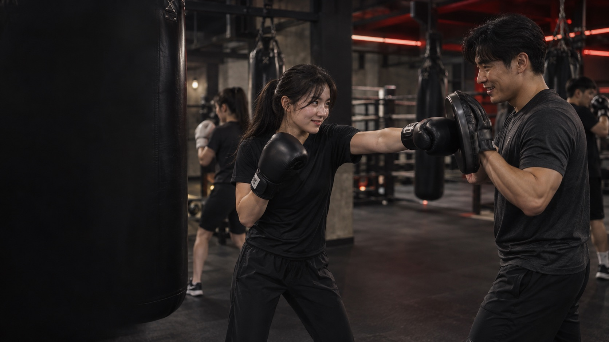
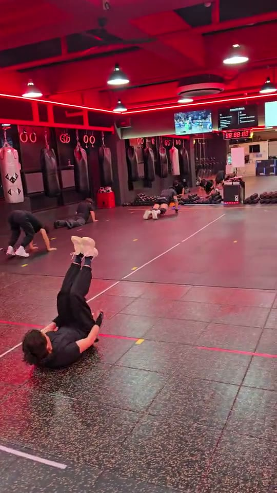
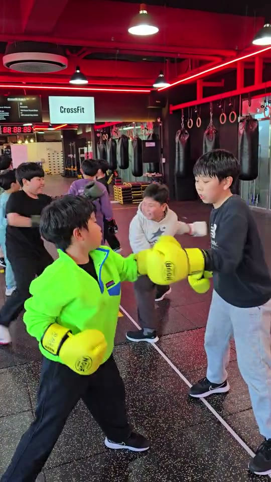
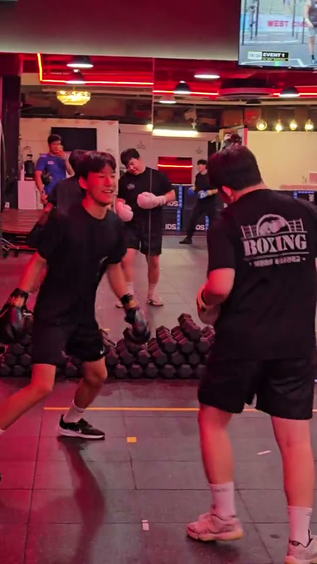

성인·학생복싱
복싱을 처음 배우거나 기본 동작을 더 익히고 싶은 분에게.
스텝과 펀치를 배우고 미트와 샌드백으로 연결합니다. 기술을 익혀가는 재미를 느낄 수 있는 수업입니다.
수업에서 무엇을 하나요?
몸풀기와 풋워크로 시작해 기본 펀치, 미트와 샌드백 연습으로 이어갑니다. 첫 방문 때 경험과 운동 목표를 알려주세요.
나에게 맞는 운동을 찾고,
첫 수업을 준비해보세요.
복싱 경험이 없어도 괜찮습니다. 상담에서 나에게 맞는 시작을 함께 찾아보세요.

복싱사관학교는 전주 효천의 그룹 운동 공간입니다. 처음 쥐는 글러브부터 익숙해진 발걸음까지, 각자의 속도로 라운드를 쌓아갑니다.
배우고 싶은 기술, 기르고 싶은 체력, 운동을 이어갈 이유가 서로 달라도 괜찮습니다. 각 수업의 분위기를 실제 장면으로 확인해 보세요.
복싱을 처음 배우거나 기본 동작을 더 익히고 싶은 분에게.
스텝과 펀치를 배우고 미트와 샌드백으로 연결합니다. 기술을 익혀가는 재미를 느낄 수 있는 수업입니다.
몸풀기와 풋워크로 시작해 기본 펀치, 미트와 샌드백 연습으로 이어갑니다. 첫 방문 때 경험과 운동 목표를 알려주세요.

복싱 기술보다 전신을 움직이며 체력을 기르고 싶은 분에게. 여러 동작을 함께 이어가는 그룹 운동입니다.
워밍업 후 전신 움직임과 체력 운동을 이어갑니다. 크로스핏 방식의 운동에 관심이 있다면 상담에서 수업 구성과 참여 수준을 확인해 주세요.

움직이며 복싱 기초를 익히고 싶은 어린이를 위한 수업입니다. 자세와 스텝부터 차근차근 시작합니다.
기본 자세와 발 움직임, 복싱 동작을 연습합니다. 참여 연령과 반 편성은 상담에서 확인해 주세요.
성인·학생복싱, 피지컬 트레이닝, 키즈복싱의 실제 장면을 한 편에 담았습니다.
어떤 수업이 맞을지 정하기 어려워도 괜찮습니다. 관심사를 고른 뒤 상담에서 알려주세요.
공개된 효천본관 이용권 기준입니다. 수업별 적용과 추가 옵션은 상담에서 확인해 주세요.
1개월 20만 원
3개월 54만 원
1개월 16만 원
1일 3만 원
기본 복싱장비 6만 원 · 운동복 대여 월 1만 원 · 키즈복싱 차량 이용 월 2만 원
네이버 플레이스에 게시된 이용권 안내 기준 · 차량 운행 구간과 프로그램별 적용은 상담에서 확인해 주세요.
상담부터 수업 참여까지, 확인할 내용을 미리 알면 시작이 편해집니다.
카카오 예약에서 방문 날짜와 시간을 골라 요청해 주세요. 평일 10·15·17·19·20·21시 중 선택할 수 있습니다.
예약 요청은 담당자 확인 후 확정됩니다. 확정 안내를 확인해 주세요.
예약한 시간보다 10분 먼저 방문해 주세요. 수업별 준비물과 참여 방법은 상담에서 안내받을 수 있습니다.
평일 10:00–22:00 · 휴게 12:00–15:00
토·일·공휴일 휴무
프로그램별 수업시간, 준비물, 체험 비용은 상담에서 확인해 주세요.
심박 측정과 Record 운동기록은 수강 프로그램이 아닌 운동을 돕는 기능입니다. 기록을 통해 자신의 이전 운동을 돌아보고 다음 라운드의 목표를 세워보세요.
실제 수업에서 촬영한 장면입니다. 처음 방문할 공간의 분위기를 먼저 살펴보세요.

복싱사관학교 효천본관
063-717-6433
초보자도 참여할 수 있습니다. 상담에서 경험과 운동 목표를 알려주시면 시작할 수 있는 수업을 안내받을 수 있습니다.
스파링은 선택입니다. 복싱 기술과 체력운동만으로도 참여할 수 있습니다.
방문할 수업과 준비물은 상담에서 확인해 주세요.
참여 연령과 반 편성은 상담에서 확인해 주세요.
첫 라운드를 준비할 때, 궁금한 점부터 이야기해 주세요.